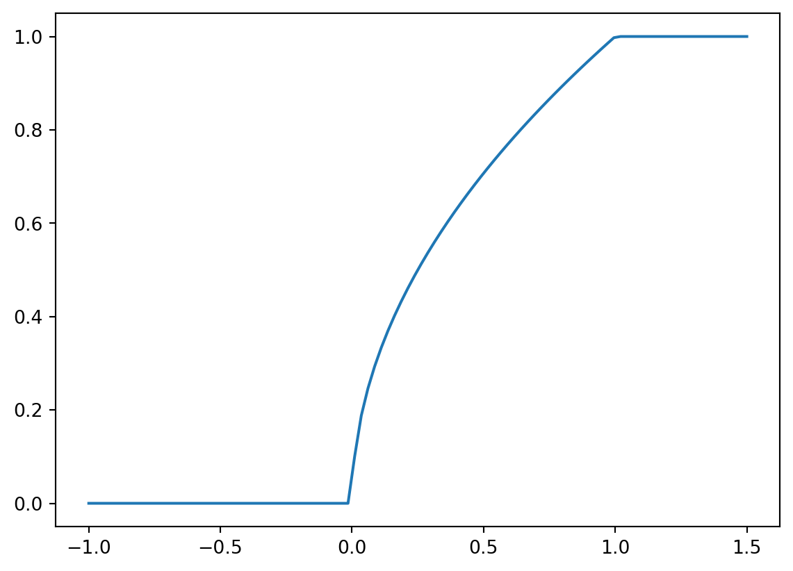
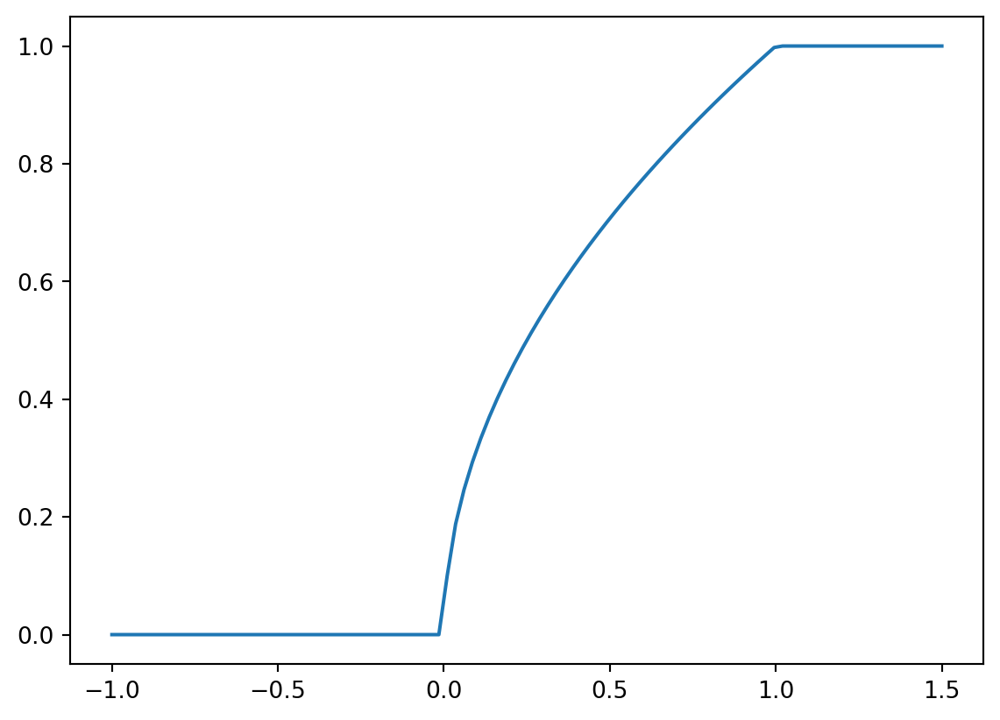
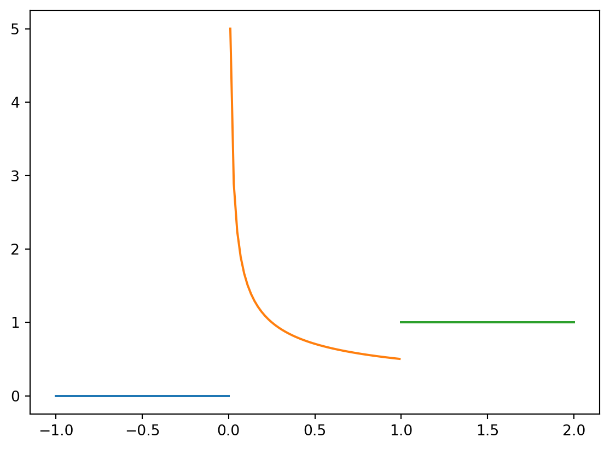

import numpy as np
import matplotlib.pyplot as plt
def G(x):
if x <= 0:
return 0
elif x > 0 and x < 1:
return np.sqrt(x)
return 1
xticks = np.linspace(-1, 1.5, 100)
plt.plot(xticks, [G(x) for x in xticks])
\[ \newcommand{\Cov}{\operatorname{Cov}} \newcommand{\Var}{\operatorname{Var}} \newcommand{\E}{\operatorname{E}} \newcommand{\P}{\operatorname{P}} \newcommand{\rank}{\operatorname{rank}} \newcommand{\trace}{\operatorname{trace}} \newcommand{\sgn}{\operatorname{sgn}} \newcommand{\F}{\mathcal{F}} \newcommand{\G}{\mathcal{G}} \newcommand{\qed}{\tag*{$\square$}} \newcommand{\erf}{\operatorname{erf}} \newcommand{\sgn}{\operatorname{sgn}} \newcommand{\1}{\mathbb{1}} \def\iddots{{\kern3mu\raise1mu{.}\kern3mu\raise6mu{.}\kern3mu \raise12mu{.}}} \]
Prove proposition 1.3.
This follows from Definition 2.3 (3) with \(A = A_1\), \(B = A_2\) and \(A_i = \emptyset\) for \(i > 2\):
\[ \begin{align} \P(A \cup B) &= P (\cup_{i} A_i) = \P(A_1) + \P(A_2) + \cup_{i > 2} \P(A_i) \\ &= \P(A) + \P(B) + \cup_{i > 2} \P(\emptyset) \\ &= \P(A) + \P(B). \end{align} \]
\(\Omega\) is the disjoint union of \(A\) and \(A^c\). By (1) above \[ 1 = \P(\Omega) = \P(A \cup A^c) = \P(A) + \P(A^c) \] so \[ \P(A) = 1 - \P(A^c). \]
Express \(A \cup B = (A\setminus B) \cup B\) where the union is disjoint. Using (1)
\[ \P(A \cup B) = \P(A\setminus B) + \P(B). \] Now, \[ \P(A\setminus B) + \P(A\cap B) = \P(A) \] and so \[ \P(A\setminus B) = \P(A) - \P(A\cap B). \]
It follows that
\[ \P(A \cup B) = \P(A \setminus B) + \P(B) = \P(A) + \P(B) - \P(A \cap B). \]
If \(A \subseteq B\), then \(B = A \cup (B \setminus A)\) where the union is disjoint. It follows that
\[ \P(B) = \P(A) + \P(B \setminus A) \geq \P(A). \]
Let \(\Omega\) be a sample space with a finite number of outcomes. We define
\[ \P(A) = \#A/\#\Omega \] for \(A \subseteq \Omega\).
\(P\) is a probability on \(\Omega\).
Proof:
Since counts are positive, \(P >= 0\). Since \(\#A \leq \#\Omega\), \(P \leq 1\) and so \(\P(A) \in [0, 1]\) for \(A \subseteq \Omega\).
The empty set \(\emptyset\) has no elements, so \(\P(\emptyset) = 0\). It is easy to see that \[ \P(\Omega) = \frac{\# \Omega}{ \# \Omega} =1. \]
Additivity: for any infinite, mutually disjoint sequence of events \(A_1, A_2, \ldots\) there exists \(N\) such that \(A_n = \emptyset\) for all \(n \geq N\). In fact, \(N\) must be less than \(\# \Omega\).
Then
\[ \begin{align} \P(\cup_{i=1}^{\infty} A_n) &= \P(\cup_{i=1}^{N} A_n)\\ &= \frac{\sum_{i=1}^N \# A_n}{\# \Omega} \\ &= \sum_{i=1}^N \P(A_n) \\ &= \sum_{i=1}^{\infty} \P(A_n). \end{align} \].
Let \(\rho_X\) be the distribution of random variables \(X\) on some probability space \((\Omega, \mathcal{F}, P)\). \(\rho_X\) has the properties of a probability on \(\mathbb{R}\).
Proof:
Let \(\mathcal{F}_X\) be the \(\sigma\)-field of sets in \(\mathbb{R}\) such that \[ A \in \mathcal{F} \iff \{\omega \in \Omega: X(\omega) \in A\} \in \mathcal{F}. \]
We define \(P_X\) on \(\mathcal{F}_X\) by
\[ P_X(A) = \P(\{\omega \in \Omega: X(\omega) \in A\}). \]
We note that \(P_X\) extends \(\rho_X\).
For notational simplicity, we write
\[ X^{-1}(A) = \{\omega \in \Omega: X(\omega) \in A\}. \]
Clearly, for any \(A \in \mathcal{F}_X\), \(P_X(A) = \P(X^{-1}(A)) \in [0,1]\), so satisfies (1) of Definition 1.2.
The pre-image of \(\emptyset\), \(X^{-1}(\emptyset)\), must be itself empty so
\[ P_X(\emptyset) = \P(\emptyset) = 0. \]
Similarly, the pre-image of \(\mathbb{R}\) must be all of \(\Omega\) and so
\[ P_X(\mathbb{R}) = \P(\Omega) = 1. \]
This shows that \(P_X\) satisfies (2) of Definition 2.1.
Let \(A_1, A_2, \ldots\) be an infinite sequence of events in \(\mathcal{F}_X\) that are mutually disjoint. Note that the sequence of pre-images \(X^{-1}(A_1), X^{-1}(A_2), \ldots\) are also mutually disjoint. Since \(P\) is a probability we can use its additivity to prove the additivity of \(P_X\):
\[ P_X(\cup_{i=1}^{\infty} A_i) = \P(\cup_{i=1}^{\infty} X^{-1}(A_i)) = \sum_{i=1}^{\infty} \P(X^{-1}(A_i)) = \sum_{i=1}^{\infty} P_X(A_i). \]
This shows that \(P_X\) satisfies (3) of Definition 2.1.
Let \((\Omega, \mathcal{F}, P)\) and \(A \in \mathcal{F}\) with \(0 < \P(A) < 1\). What is the distribution of \(\1_A\)?
Observe that \(\P(\1_A \leq x) = 0\) when \(x < 0\) because the indicator is a non-negative function. When \(0 \leq x < 1\), \(\1_A(\omega) > x\) for all \(\omega \in A\) but \(\1_A(\omega) = 0 <= x\) for \(\omega \in A^c\). It follows that \[\P(\1_A \leq x) = \P(\{\omega \in \Omega : \1_A(\omega) \leq x\}) =\P(\{\omega \in \Omega : \omega \in A^c\}) = \P(A^c).\] For \(x \geq 1\), \(\1_A \leq x\) is true for all values of \(\omega \in \Omega\) because the maximum value of the indicator function is \(1\). Therefore, with \(F\) denoting the CDF of \(\1_A\): \[ F(x) = \P(\1_A \leq x) = \begin{cases} 0 & \text{if } x < 0,\\ \P(A^c) & \text{if } 0 \leq x < 1,\\ 1 & \text{if } x \geq 1. \end{cases} \]
Let \((\Omega, \mathcal{F}, P)\) be a probability space and \(A_1, A_2, \ldots\) be a sequence of events in \(\mathcal{F}\) such that \(\P(A_n) = 1\) for all \(n \geq 1\). We show that
\[ \P(\cap_{i\geq 1} A_n) = 1. \]
Define \(B_n = A_n^c\) for all \(n \geq 1\). We note that
\[ \P(B_n) = 1 - \P(A_n) = 0 \] for all \(n \geq 0\).
Define a sequence of events \(C_n = \cup_{i =1}^n B_i\) and note that the sequence is increasing. Continuity of probability gives
\[ \lim_{n \to \infty} \P(C_n) = \P(\cup_{i=1}^{\infty} B_i). \]
Using \(\P(A \cup B) \leq \P(A) + \P(B)\), we see that
\[ \P(C_n) \leq \sum_{i = 1}^n \P(B_i) = 0 \]
and so \(\P(C_n) = 0\) and \[\lim_{n \to \infty} \P(C_n) = \P(\cup_{i=1}^{\infty} B_i) = 0\].
To finish the proof, we note that
\[\begin{align} \P(\cap_{i=1}^{\infty} A_i) &= 1 - \P((\cap_{i=1}^{\infty} A_i)^c)\\ &= 1 - \P( \cup_{i =1}^{\infty} A_i^c)\\ &= 1 - \P(\cup_{i=1}^{\infty} B_i) \\ &= 1. \end{align}\]
Let \(X\) be a random variable on \((\Omega, \mathcal{F}, P)\) this is uniformly distributed on \([-1, 1]\). Define \(Y = X^2\).
First, the CDF:
Let \(F\) denote the CDF of \(Y\) and \(F_X\) denote the CDF of X.
Then \[ G(x) = \P(Y \leq x) = \P(X^2 \leq x) = \P(X \leq \sqrt{x}) = F(\sqrt{x}). \]
Now,
\[ F(x) = \begin{cases} 0 & \text{if } x \leq 0, \\ x & \text{if } 0 < x < 1, \\ 1 & \text{if } x \geq 1. \end{cases} \]
I’ve taken \(F\) to be different to that in the book (the first case in the book uses \(x < 0\)) so that the resulting \(G\) has a well-defined derivative at zero.
and so
\[ G(x) = \begin{cases} 0 & \text{if } x <= 0, \\ \sqrt{x} & \text{if } 0 < x < 1, \\ 1 & \text{if } x \geq 1. \end{cases} \]
We plot this below:
import numpy as np
import matplotlib.pyplot as plt
def G(x):
if x <= 0:
return 0
elif x > 0 and x < 1:
return np.sqrt(x)
return 1
xticks = np.linspace(-1, 1.5, 100)
plt.plot(xticks, [G(x) for x in xticks])
\[ p(y) = \frac{dG}{dy}(y) = \begin{cases} 0 & \text{if } x \leq 0, \\ \frac{1}{2\sqrt{x}} & \text{if } 0 < x < 1, \\ 0 & \text{if } 0 \geq 1. \end{cases} \]
The plot is below
def p(x):
if x <= 0:
return 0
elif x > 0 and x < 1:
return (1/( 2 * np.sqrt(x)))
return 1
xticks = np.linspace(-1, 0, 50)
plt.plot(xticks, [p(x) for x in xticks])
xticks = np.linspace(0.01, 0.99, 50)
plt.plot(xticks, [p(x) for x in xticks])
xticks = np.linspace(1, 2, 50)
plt.plot(xticks, [p(x) for x in xticks])
plt.show()
\(X\) and \(Y\) are two integrable random variables on the same probability space. Then \(aX + bY\) is also an integrable random variable for any \(a, b \in \mathbb{R}\).
Proof:
We assert that \(aX + b Y\) is a random variable and are left to show that
\[ \E(\left|aX + bY\right|) < \infty. \]
By the triangle inequality,
\[ \left| aX + bY \right| \leq \left| a \right| \left| X \right| + \left| b \right| \left| Y \right| \] and so we can conclude that
\[ \E(\left|aX + bY\right|) < \infty. \]
Let \(X\) be a random variable and \(F_X\) be its CDF. Then
\[ \P(X = a) = F_X(a) - \lim_{x \to a-} F_X(x) = F_X(a) - F_X(a-). \]
Proof:
Define a decreasing sequence of events \(A_n = \{ X \in (a - 1/n, a]\}\) and note that \(\cap_{i=1}^{\infty} A_n = \{ X = a\}\). By continuity of probability
\[ \lim_{n \to \infty} \P(A_n) = \P(X = a). \]
Now,
\[\begin{align} \P(X = a) &= \lim_{n \to \infty} \P(A_n)\\ &= \lim_{n \to \infty} (F_X(a) - F_X(a - 1/n))\\ &= F_X(a) - \lim_{n \to \infty} (F_X(a - 1/n)) = F_X(a) - F_X(a-). \end{align}\]
Let \(Y\) be an exponential random variable with parameter \(\lambda\). The for any \(s, t > 0\)
\[ \P(Y > t + s | Y > s) = \P(Y > t). \]
Proof:
The CDF of the exponential distribution is
\[ F(t) = 1 - e^{-\lambda t}. \]
Therefore,
\[ \P(Y > t) = 1 - F(t) = e^{-\lambda t}. \]
Now
\[\begin{align} \P(Y > t + s | Y > s) & = \frac{\P(Y > t + s \cap Y > s)}{\P(Y > s)} \\ & = \frac{\P(Y > t + s)}{\P(Y > s)} \\ & = \frac{e^{-\lambda(t + s)}}{e^{-\lambda s}} \\ & = e^{-\lambda t} \\ & = \P(Y > t). \end{align}\]
Note that \(\P(Y > t + s \cap Y > s) = \P(Y > t + s)\) because \[ \{ \omega \in \Omega | Y(\omega) > t + s \} \subseteq \{ \omega \in \Omega | Y(\omega) > t \} \] and so \[ \{ \omega \in \Omega | Y(\omega) > t + s \} \cap \{ \omega \in \Omega | Y(\omega) > t \} = \{ \omega \in \Omega | Y(\omega) > t + s\}. \]
Using the memory property \[ \begin{align} \P(X \leq x + h) - \P(X < x) &= 1 - \P(X > x + h) -1 + \P(X > x) \\ &= \P(X > x) - \P(X > x + h) \\ &= \P(X > x) - \P(X > x + h | X > x) \P(X > x) \\ &= \P(X > x)(1 - \P(X > x + h | X > x)) \\ &= \P(X > x)(1 - \P(X > h)) \\ &= \P(X > x)(\P(X \leq h) - \P( X\leq 0)). \end{align} \]
So we can assert that the CDF \(F\) satisfies
T \[ \begin{align} F'(x) &= \lim_{h\to 0} \frac{\P(X \leq x +h) - \P(X \leq x)}{h} \\ &= \P(X > x) \lim_{h \to 0} \frac{\P(X \leq h) - \P(X \leq 0)}{h} \\ &= \P(X > x) F'(0) \\ &= (1 - F(x)) F'(0). \end{align} \]
The family of solutions to this differential equation is
\[ F(x) = 1 - e^{-\lambda x} \] for \(\lambda > 0\).
\[ E(Zg(Z)) = E(g'(Z)) \]
when both expectations are well-defined.
Proof:
We can use LOTUS and integration by parts:
\[\begin{align} E(Z g(Z)) = \int_{-\infty}^{\infty} z g(z) p(z) dz &= \frac{1}{\sqrt{2 \pi}} \int_{-\infty}^{\infty} z g(z) e^{-z^2/2} dz \\ &= \int_{-\infty}^{\infty} g(z) (-\frac{dp}{dz}) dz \\ &= -g(z) p(z) \rvert_{-\infty}^{\infty} + \int_{-\infty}^{\infty} g'(z) p(z) dz \\ &= E(g'(Z)). \end{align}\]
Note that
\[ -g(z) p(z) \rvert_{-\infty}^{\infty} = 0 \]
follows from \(zg(z) p(z)\) being integrable.
\[ E( Z g(Z)) = \E(Z^{n+2}) = \E((n + 1) Z^{n}). \]
We see that
\[ \begin{align} E(Z^{2n}) &= (2n -1) \E(Z^{2n -2})\\ &= (2n -1) (2n -3) \E(Z^{2n - 4})\\ &= (2n - 1) (2n -3) \ldots 1 \E(Z^2)\\ &= (2n -1) (2n -3) \ldots 1. \end{align} \]
Similarly,
\[ \begin{align} E(Z^{2n + 1}) &= (2n) \E(Z^{2n -1})\\ &= (2n) (2n -2) \E(Z^{2n - 3})\\ &= (2n) (2n -2) \ldots 1 \E(Z)\\ &= 0. \end{align} \]
Setting \(X = \sigma Z\), we find that
\[ E(X^{2n}) = \sigma^{2n} (2n -1)(2n -3) \ldots 1. \]
Note: without the symmetry given by having mean zero the special structure of odd and even functions would be lost.
Show that for a random variable \(X \sim exp(\lambda)\)
\[ E(e^{t X}) = \frac{ \lambda}{\lambda - t }, t < \lambda. \]
Using LOTUS and choosing \(t < \lambda\)
\[\begin{align} \E(e^{tX}) &= \int_{0}^{\infty} e^{tx} \lambda e^{-\lambda x} dx \\ &= \int_0^{\infty} e^{(t - \lambda) x} dx \label{exp:integral} \tag{*} \\ &= \frac{1}{t - \lambda} e^{(t - \lambda) x} \rvert_{0}^{\infty} \\ &= \frac{ \lambda}{\lambda - t }. \end{align}\]
Note that if \(t \geq \lambda\), then the integral \(\eqref{exp:integral}\) is not well-defined.
We can calculate \(\E(X)\):
\[ \E(X) = \frac{d}{dt} \E(e^{tX}) \rvert_{t=0} = \frac{\lambda}{(\lambda -t)^2}\rvert_{t=0} = \frac{1}{\lambda}. \]
We can also calculate \(\Var(X)\):
\[ \E(X^2) = \frac{d^2}{dt^2} \E(e^{tX}) \rvert_{t=0} = \frac{2\lambda}{(\lambda -t)^3} \rvert_{t=0} = \frac{2}{\lambda^2}. \]
and so
\[ \Var(X) = \E(X^2) - \E(X)^2 = \frac{2}{\lambda^2} - \frac{1}{\lambda^2} =\frac{1}{\lambda^2}. \]
Consider a random variable \(X\) with finite MGF such that
\[\begin{equation} \E(e^{\lambda X}) \leq e^{\lambda^2/2} \label{gtail} \tag{1} \end{equation}\]
for all \(\lambda \in \mathbb{R}\).
Prove that for \(a > 0\)
\[ \P(X > a) \leq e^{-a^2/2}. \]
Proof:
For \(\lambda > 0\) \[ \P(X > a) = \P(e^{\lambda X} > e^{\lambda a}) \] by the monotonicity of the exponential. By Markov’s inequality and \(\eqref{gtail}\) \[ \P(e^{\lambda X} > e^{\lambda a}) \leq \frac{E(e^{\lambda X})}{e^{\lambda a}} \leq e^{\lambda^2/2 - \lambda a}. \]
Let \(f(\lambda) = e^{\lambda^2/2 - \lambda a}\). The minimum for \(f\) is found by differentiation:
\[ f'(\lambda) = (\lambda - a) e^{\lambda^2/2 - \lambda a} \]
and \(f'(\lambda) = 0\) is solved for \(\lambda = a\). Therefore,
\[ \P(X > a) \leq e^{a^2/2 - a^2} = e^{-a^2/2}. \]
\[ \qed \]
Let \(X\) be a random variable such that \(X >= 0\). Then
\[ \E(X) = \int_0^{\infty} \P(X > x) dx. \]
Proof:
\[ \int_0^{\infty} \P(X > x) dx = \int_0^{\infty} (1 - F(x)) dx \]
where \(F(x) = \P(X <= x)\). We can write
\[ 1 - F(x) = \lim_{x \to \infty} F(x) - F(x) = \int_x^{\infty} dF(t) \]
where the integral is understood in the Lebesgue sense.
Now,
\[ \int_0^{\infty} \P(X > x) dx = \int_0^{\infty} \int_x^{\infty} dF(t) dx \]
and by changing the order of integration (and appealing to Fubini’s Theorem)
\[ \int_0^{\infty} \P(X > x) dx = \int_0^{\infty} \int_0^t dx dF(t) = \int_0^{\infty} t dF(t) = E(X). \]
Subtle point: we’re using the fact that \(X >= 0 \implies F(x) = 0\) for \(x < 0\) to arrive at zero for the lower limit of the inner integral.
\[ \qed \]
Let \(g: \mathbb{R} \mapsto \mathbb{R}\) be measurable. Then \(\E(g(X)) = \int_{-\infty}^{\infty} g(x) dF(x)\).
First suppose that \(g >= 0\). Then
\[ \E(g(X)) = \int_0^{\infty} \P(g(X) > x) dx \] by the result above.
Now,
\[ \int_0^{\infty} \P(g(X) > x) dx = \int_0^{\infty} \int_{\{z: g(z) > x\}} dF(z) dx. \]
Changing the order of integration, we see get
\[ \int_{-\infty}^{\infty} \int_0^{g(z)} dx dF(z) = \int_{-\infty}^{\infty} g(x) dF(x). \]
Now suppose we have general \(g\). Split \(g\) into the sum of non-negative and negative components
\[ g = g_+ - g_{-} \]
\[ \begin{align} \E(g(X)) &= \E(g_+(X)) - \E(g_{-}(X)) \\ &= \int_{-\infty}^{\infty} g_+(x) dF(x) - \int_{-\infty}^{\infty} g_{-}(x) dF(x) \\ &= \int_{-\infty}^{\infty} g(x) dF(x). \end{align} \]
Let \(X \geq 0\) be a random variable with a pdf. Clearly, for \(x > 0\),
\[ \P(X > x) = \P(X \1_{X > x} > x) \]
and so using this an Markov’s inequality
\[ \begin{align} x \P(X > x) &= x \P(X \1_{X > x}) \\ &\leq \E(X \1_{X > x}) \\ &= \int_x^{\infty} \P(X > u) du \\ &\to 0 \end{align} \] as \(x \to \infty\).
If \(\E(X_+) < \infty\) and \(X_+\) then \(\lim_{x \to \infty} x \P(X > x) = 0\).
Take a random variable \(X\) such the \(E(|X|) < \infty\). Prove that
\[ \E(X) = \int_0^{\infty} \P(X > x) dx - \int_{-\infty}^0 \P(X < x) dx. \]
Proof:
Define \(X_+ = X \1_{X \geq 0}\) and \(X_{-} = X \1_{X < 0}\) and note that \(X = X_+ + X_{-}\). Then
\[ \E(X) = \E(X_+) + \E (X_{-}) \] by linearity of expectation. From above,
\[ \E(X_+) = \int_0^{\infty} \P(X_+ > x) dx = \int_0 ^{\infty} \P(X > x) dx. \]
Set \(Y = -X_{-}\). Then \(Y > 0\) and
\[ \E(Y) = \int_0^{\infty} \P(Y > y) dy. \]
Now,
\[\begin{align} \E(X \1_{X < 0}) &= - \E(- X_{-}) \\ &= - \E(Y) \\ &= -\int_0^{\infty} \P(-X_{-} >y) dy \\ &= \int_{0}^{-\infty} \P(X_{-} < x) dx \\ &= \int_0^{-\infty} \P(X < x) dx \end{align}\]
Then
\[ \E(X) = \int_0^{\infty} \P(X > x) dx - \int_{-\infty}^0 \P(X < x) dx. \]
\[ \qed \]
\[ \int_{-\infty}^0 (\P(X <= x) -\P(X<x)) dx = \int_{-\infty}^0 \P(X = x) dx = 0 \]
when \(X\) is continuous since \[ P(X = x) = F_X(x) - F_X(x-) = 0. \]
In this case, we can state
\[ \E(X) = \int_0^{\infty} \P(X > x) dx - \int_{-\infty}^0 \P(X \leq x) dx. \]
A good definition is
\[ \E(Z) = \E(\Re(Z)) + i \E(\Im(Z)). \]
Note that if \(E(|Z|) < \infty\), then the real and imaginary parts of \(Z\) are also integrable.
We can extend LOTUS to complex valued functions. Suppose that \(g: \mathbb{R} \to \mathbb{C}\) and \(\E(|g(X)|) < \infty\). We can decompose \(g\) as
\[ g = g_1 + i g_2. \]
where \(g_1, g_2 : \mathbb{R} \to \mathbb{R}\) are integrable. Then by linearity of expectation
\[\begin{align} \E(g(X)) &= \E(g_1(X)) + i \E(g_2(X))\\ &= \int_{-\infty}^{\infty} g_1(x) dF(x) + i \int_{-\infty}^{\infty} g_2(x) dF(x)\\ &= \int_{-\infty}^{\infty} (g_1(x) + i g_2(x)) dF(x)\\ &= \int_{-\infty}^{\infty} g(x) dF(x). \end{align}\]
Using this result, we see that
\[ \E(e^{itX}) = \E(\cos(tX)) + i \E(\sin(tX)) \]
from the familiar Euler identity \(e^{itx} = \cos(tx) + i \sin(tx)\).
The same result can be argued using the Taylor series:
\[\begin{align} E(e^{itX}) &= \sum_{n=0}^{\infty} E( \frac{(itX)^n}{n!})\\ &= \sum_{n=0}^{\infty} E( \frac{((-1)^{n} t^{2n} X^{2n}}{(2n)!}) + i \sum_{i=0}^{\infty} E( \frac{((-1)^{n} t^{2n +1} X^{2n + 1}}{(2n + 1)!})\\ &= E(\cos(tX)) + iE(\sin(tX). \end{align}\]
\[ \E(e^{itX}) = \frac{1}{\sqrt{2 \pi}} \int_{-\infty}^{\infty} e^{itx} e^{-\frac{1}{2}x^2} dx. \]
Define \(g(t) = \E(e^{itX})\) and try to build a differential equation we can solve which is hopefully equal to the desired result.
Using the Dominated Convergence Theorem, we can take differentiation inside the expectation integral (the derivative of the integrand is dominated by \(e^{-\frac{1}{2}x^2}\) which is integrable).
We get
\[\begin{align} g'(t) &= \frac{1}{\sqrt{2 \pi}} \int_{-\infty}^{\infty} i x e^{itx} e^{-\frac{1}{2}x^2} dx. \end{align}\]
Use integration by parts:
Set \(u = ie^{itx}\) so \(du = -t e^{itx}\) and
\[\begin{align} dv &= \frac{1}{\sqrt{2 \pi}} x e^{-\frac{1}{2}x^2}\\ &= -\frac{1}{\sqrt{2 \pi}} \frac{d}{dx}(e^{-\frac{1}{2}x^2}). \end{align}\]
Performing the integration by parts we see that \[ \begin{align} g'(t) &= \frac{1}{\sqrt{2 \pi}} \int_{-\infty}^{\infty} i x e^{itx} e^{-\frac{1}{2}x^2} dx \\ &= -\frac{1}{\sqrt{2 \pi}} ie^{itx} e^{-\frac{1}{2}x^2} \rvert_{-\infty}^{\infty} - \frac{1}{\sqrt{2 \pi}} \int_{-\infty}^{\infty} te^{itx} e^{-\frac{1}{2}x^2} dx \\ &= 0 + iE(e^{itX})\\ &= -t g(t). \label{characteristic:diffeqn} \tag{*} \end{align} \] Moreover,
\[ g(0) = E(e^{0}) = E(1) = 1. \]
The unique solution to \(\eqref{characteristic:diffeqn}\) is
\[ g(t) = \frac{1}{2}e^{-t^2/2} \]
and so
\[ E(e^{itX}) = \frac{1}{2}e^{-t^2/2}. \]
Let \(Z = \sigma X + \mu\) for \(\sigma > 0\) and \(\mu \in \mathbb{R}\). Then
\[\begin{align} E(e^{itZ}) &= E(e^{it(\sigma X + \mu)}) \\ &= E(e^{\sigma X} e^{it\mu}) \\ &= e^{it\mu} E(e^{it\sigma X})\\ &= e^{it\mu}e^{-(t\sigma)^2/2}\\ &= e^{it \mu - \sigma^2t^2/2}. \end{align}\]
\[ \qed \]
Let \(X \geq 0\) be a random variable on \((\Omega, \mathcal{F}, P)\). If \(\E(X) < \infty\), then \(\P(X = \infty) = 0\).
Proof:
For \(n > 0\), define \(A_n = \{\omega \in \Omega: X(\omega) > n \}\).
We note that the sequence of events \(A_n\) is decreasing and so by continuity of probability
\[ \lim_{n\to \infty} \P(A_n) = \P(\cap A_n) = \P(X = \infty). \]
The proof is complete with an application of Markov’s inequality: \[ \P(X = \infty) = \lim_{n \to \infty} \P(A_n) \leq \lim_{n\to\infty} \frac{1}{n} \E(X) = 0. \]
\[ \qed \]
Let \(X \geq 0\) be a random variable on \((\Omega, \mathcal{F}, P)\). If \(\E(X) = 0\), then \(\P(X = 0) = 1\).
Proof:
By Markov’s inequality
\[ \P(X > 1/n) \leq n \E(X) = 0 \]
and so \(\P(X > 1/n) = 0\) for \(n = 1, 2, \ldots\). It follows that
\[ \P(X \leq 1/n) = 1 - \P(X > 1/n) = 1. \]
The sequence of events \(\{ X \leq 1/n \}\) is decreasing and
\[ \{ X = 0 \} = \cap \{ X \leq 1/n \}. \]
By the continuity of probability
\[ \P(X = 0) = \lim_{n \to \infty} \P(X \leq 1/n) = 1. \]
\[ \qed \]